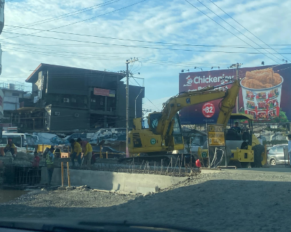

| Location | Photo Documentation | Good = 🙂 Issue = ! |
Domain | Remarks |
|---|---|---|---|---|
| A.B Fernandez East Avenue |  | ! | Outdoor spaces and buildings
Transport Community and health services |
This is an image of the ongoing construction in Dagupan City. |
| A.B Fernandez East Avenue | ! | Outdoor spaces and buildings
Transport Community and health services |
This is the road on the side of the construction, which is the initial road. | |
| A.B Fernandez East Avenue | ! | Outdoor spaces and buildings
Transport Community and health services |
This McDonald’s is lower than the current elevation and its location is one of the only reasons it still stands strong as a business due to it being next to a college (University of Pangasinan). | |
| A.B Fernandez East Avenue | ! | Outdoor spaces and buildings
Transport Community and health services |
Due to the implementation of the road heightening, the 7/11 near a local hospital (Region 1 Hospital) needed to construct stairs in order for people to still have the capability to access it. | |
| A.B Fernandez East Avenue | ! | Outdoor spaces and buildings
Transport Community and health services |
This is long-standing Jollibee has closed down due to the frequent flood that brought water inside its buildings, so they decided to close down and open a branch somewhere else. |
In conclusion, our proposed action plan seeks to improve the quality of life in Dagupan City by addressing flooding to the government through sustainable projects, such as upgrading the drainage systems to handle larger volumes of water, integrating green infrastructure like tree planting to absorb excess rainwater, and ensuring improved accessibility for residents and businesses. Through a website, we seek to raise awareness, foster collaboration, and urge the government to prioritize resolving critical issues that directly affect community safety.
We believe that modernization serves as an inclusive solution, promoting equality by addressing the needs of all, particularly the most vulnerable, to ensure the development of the community as a whole.